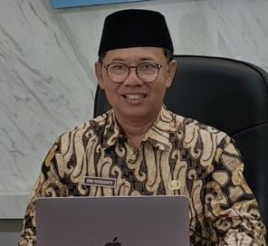

1.300 Siswa
Belajar di tiga program penjurusan: Teknik, Kesehatan, dan Soshum.
Belajar di tiga program penjurusan: Teknik, Kesehatan, dan Soshum.
Pembelajaran efektif dan efisien, didukung teknologi informasi dan komunikasi.
Siswa unggul di bidang akademik maupun non-akademik.

Assalamu'alaikum Warahmatullahi Wabarakatuh.
Selamat datang di website resmi SMA Negeri 2 Madiun. Puji syukur kita panjatkan ke hadirat Allah SWT atas segala limpahan rahmat-Nya sehingga kita dapat meluncurkan website sekolah ini sebagai jendela informasi utama.
Di era digital saat ini, kebutuhan akan informasi yang cepat dan akurat menjadi sangat krusial. Website ini hadir sebagai sarana komunikasi interaktif antara sekolah dengan peserta didik, alumni, orang tua, dan masyarakat luas. Kami berkomitmen untuk terus berinovasi dalam mencetak generasi yang cerdas secara akademik, berkarakter kuat, dan siap bersaing di tingkat global.
Mari bersama-sama wujudkan visi SMA Negeri 2 Madiun, Widya Tinata Ambuka Budi.
Terwujudnya generasi bangsa yang berintelektual dan berdaya juang tinggi dilandasi Iman dan Takwa, Pengetahuan, Teknologi dan Berbudi Pekerti Luhur.